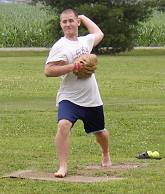
Josh Williamson allowed just 2 runs in 9 innings, but suffered the loss in game one on Opening Day by a score of 2-0. |
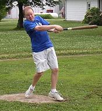
Making just fourth career start, Brian Garrard got things going early with a first inning homerun in game number one. Garrard was 5-for-12 in the first game and finished the day 9-for-32. |
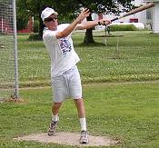
Tony Cork did his best work on the mound firing a 3-hit shutout in the first game of the tripleheader. Cork also went 9-for-29 at the plate on the day. |
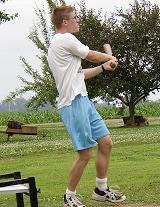
Justin Massey rips a double in the first game of the day. |
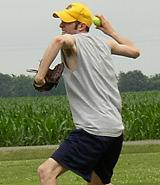
Patrick Cork allowed just one unearned run in game number two on the afternoon on 3 hits. Cork struck out 9 batters in the 7-1 victory. |
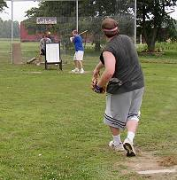
Dustin Waldrop fires a pitch in the second game of the tripleheader. Waldrop picked up the loss as the home team rallied for 5 runs in the final two innings. |
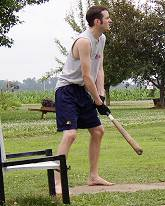
Patrick Cork finished the tripleheader 15-for-34 with 5 RBI and 6 runs scored.
|
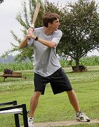
Nate Owens was just 3-for-25 on the day, but had a pair of huge RBI singles in game number two that led to the 7-1 win.
|
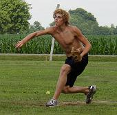
Robert Trimble fired a 7-hit shutout in the final game of the day. He also went 6-for-12 with a homer and 2 RBI in the 4-0 win.
|
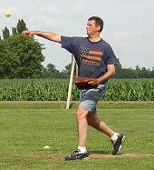
Larry Winkler made his pitching debut in the final game of the tripleheader. Winkler suffered the loss allowing 3 runs in 6 innings on 13 hits.
|
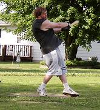
Dustin Waldrop finally got going in the final game of the tripleheader going 5-for-12 with a homerun and 2 RBI. He was 7-for-32 with 3 RBI on the day and his homerun (#72 of his career) moved him two in front of Josh Williamson for #2 all-time.
|
|